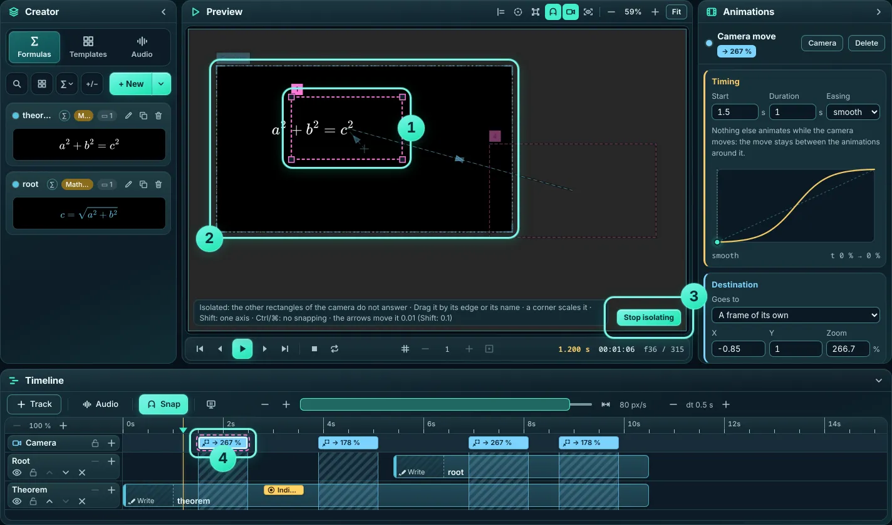
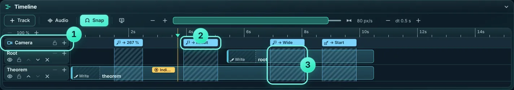
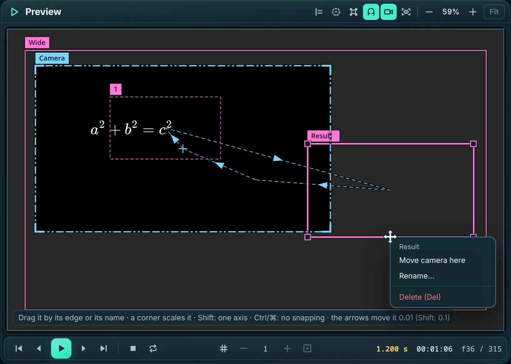

The camera
A scene is filmed through a frame. With the multicamera on, that frame is a camera you can move and zoom while the video plays: it closes in on a term, travels to a formula written far away, pulls back to show everything.
Turning the multicamera on
Choose View ▸ Multicamera, press Alt+M, or press the camera button of the Preview’s toolbar. The scene gets a camera, in Manim’s own frame to begin with. It is part of the project: it is saved with it, and turning it on is one undo step.
Two things change on screen:
- the timeline gets a Camera row under the ruler, which holds the camera’s moves as blocks;
- the Preview shows the world: its canvas takes the whole panel, nothing is cut at the frame, and the camera is drawn over the scene as a rectangle.
In the world view:
- the camera at the playhead is the sky-blue rectangle with the corners of a viewfinder, a cross at its centre and its name. What it leaves out is dimmed;
- a target camera is a pink rectangle with a name: a frame set aside for moves to go to;
- a pink dashed rectangle with a number is the frame a move goes to on its own; the number is the place of that move in the order they run;
- Start, dashed, is the frame of 0 s, shown while the camera is somewhere else;
- the dotted line is Manim’s own frame, where the picture is without a camera;
- a line with arrowheads joins the frames in the order the moves run.
Fit shows everything of the camera at once. Preferences ▸ Show the camera’s route and Preferences ▸ Dim what the camera leaves out hide the line and the dimming.
A camera move
A move takes the camera from the frame it is in to another, over a time. To make one:
- Put the playhead where the move should start.
- Press + in the header of the Camera row (Add camera move). A block of one second appears, and the playhead jumps to its end.
- In the Preview, drag the camera to where the move should arrive. Take it by its edge, its name or the cross of its centre; drag a corner to zoom.
In the world view the pointer takes the camera’s rectangles only. The formulas are drawn and left alone: pointing at one outlines nothing, and a click or a drag on one neither selects nor moves it, so a press meant for the camera never takes the formula under it. A line under the scene says so. To select and move the formulas, hold F (below), look through the camera (below) or select their clips on the timeline. A click beside the rectangles clears the selection, and the view is panned and zoomed as in any Preview.
While you drag, the rectangle sticks to the formulas, to the other rectangles and to Manim’s frame, and to the grid when it is shown; hold Ctrl to suspend that, and Shift to move along one axis only. The arrow keys nudge the selected rectangle by 0.01 (with Shift, 0.1).
Moving a formula in the world view
Sometimes a formula has to be put where the camera will be, and the camera’s rectangles are only drawn in the world view. Hold F: while the key is down the pointer takes the formulas there, as it does in any Preview. A click selects one, a drag moves it, Shift shows its handles, Alt picks its glyphs and a right-click opens its menu. The camera’s rectangles are the ones left alone meanwhile. Let the key go and the pointer is the camera’s again; a drag you had started goes on until you release the button.
The key does nothing while the scene plays, in a text field or with a menu or a dialog open.
Frames one over another
When the camera goes to the same place more than once, each move to a frame of its own, the rectangles of those frames lie one over another, and a press takes the one on top. To move one that is underneath:
- Right-click its move on the Camera row and choose Isolate in the Preview. Only the rectangle of the frame that move goes to answers the pointer now. It is drawn over the others, which are faint, and the block of the move wears a dashed ring.
- Drag the rectangle, scale it by a corner or nudge it with the arrow keys.
- Press Stop isolating, in the corner of the Preview, or Esc. Every rectangle answers again. The same entry ends the Preview’s right-click menus and the menu of the move.

A move that goes to a target camera isolates that target camera’s rectangle, and one that goes to the start, the frame of 0 s. Isolating is a way of looking: it changes nothing of the project, and it ends when its move is deleted.
The block of a move
On the Camera row a move is a block, and it behaves like an animation block: drag it along the time, stretch it by its edges, right-click it to Isolate it in the Preview (above), to Duplicate it or to Delete it. Right-click the row to add a move where you clicked. Its label says where it goes:
| Label | The move goes to |
|---|---|
| → 200 % | a frame of its own, named by its zoom (100 % is Manim’s frame) |
| → Result | the target camera with that name |
| → Start | the frame of 0 s |

With a move selected, the Animations panel shows its Start, Duration and Easing, and where it Goes to: A frame of its own, with its X, Y and Zoom; a target camera; or Start (the frame at 0 s).
Nothing else animates while the camera moves
A camera move has its time to itself. Under each move a hatched band crosses every track: the locked region.
- A move asked for where an animation runs starts after it, and one with less room than a second is as long as the room. A notice says so.
- A move dragged or stretched stops against the animation before it and after it; the readout under it says which.
- An animation block, the window of a relation and the edge of an intro or an outro dragged towards a move stop at its edge.
- What still ends up under a move, such as a whole clip dragged there, is an error of the project: the band turns red, and the Python is not exported until one of the two is moved.
An object may appear or disappear without an animation during a move: that is no animation.
Target cameras
A target camera is a frame with a name that moves can go to. Several moves can share one, and moving it changes them all.
- Right-click the empty scene and choose Add target camera here: it is centred where you clicked, as large as the camera is then.
- Right-click a target camera for Move camera here (a move to it, at the playhead), Rename… and Delete.
- Right-click the camera itself, or a move’s own frame, and Add target camera here makes a target camera of that frame.

Deleting a target camera that moves go to asks first. Those moves stay: each keeps going where the target camera was, to a frame of its own.
A click on the name of the Camera row shows the camera in the Animations panel: the frame it rests in at the playhead, and the list of target cameras.
The camera view
The world view shows the camera from outside. Press V, or the viewfinder button beside the camera’s, or choose View ▸ Camera view, to look through it: the Preview shows what the video will show at the playhead, and playing shows the moves. The rectangles are left out, and the pointer is the formulas’ again: select them, move them and edit them as ever. V again goes back to the world.
Each view keeps a zoom and a pan of its own.
From the keyboard
| Keys | What they do |
|---|---|
| Alt+M | Multicamera on or off |
| V | Camera view on or off |
| F, held | In the world view, the pointer takes the formulas instead of the camera’s rectangles |
| Esc | Stop isolating a move |
| Delete | Delete the selected move, or the selected target camera |
| Ctrl+D | Duplicate the selected move into the first place it fits after it |
| Alt+←, Alt+→ | Nudge the selected move a frame (with Shift, five) |
| Arrow keys, in the Preview | Nudge the selected rectangle 0.01 (with Shift, 0.1) |
On the Camera row, Tab reaches the moves after the row’s buttons, the arrow keys go from move to move, and Enter opens the menu of the focused one.
Turning it off
The multicamera stays on while the camera has target cameras or moves: delete them first, and a notice says so if you try. The padlock of the Camera row locks the camera instead: its moves and rectangles can be selected, not changed.
In the exported Python and the video
The video is filmed through the camera, and so is the exported scene. A ManimCE scene becomes a MovingCameraScene. In both libraries each move is a self.play(…) of its own on the camera’s frame (cam = self.camera.frame), and a move back to the start is Restore(cam). A ManimGL scene whose camera zooms starts with a few lines that make strokes scale with the zoom as ManimCE draws them (ManimGL 1.7.2 or later). See The generated Python.